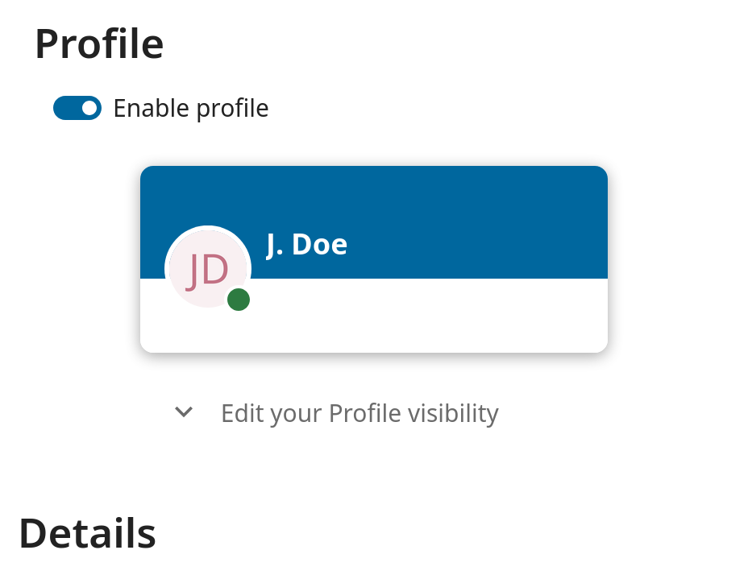

Available options and settings depending on your administrator’s configuration.
If you are not able to change the password or the display name in your personal settings,
please contact your administrator for help.
Some administrators decide to share their global address book with other Nextcloud instances (so called Trusted Servers) or even with the wider world.
This is helpful when two instances want to work closely together, or when people want to use Nextcloud as a virtual telephone book for others to browse.
It also allows searching for contacts, creating shares and much more.
You can change what personal data of yours is shared by setting the scope of your data. Clicking on the lock icon will open the following dropdown
next to each entry:
If you set your data to Private, nobody but you will be able to see it.
If you set your data to Local, all logged in users within your Nextcloud instance will be able to see the information, but no one outside of it.
If you set your data to Federated, the trusted server(s) which are added by your administrator will be able to see this data, in addition to all logged in users.
If you set your data to Global, anyone can see your data. For some use cases this is wanted.
Someone with a public facing role such as marketing or sales might want to share their contact with a wide variety of connections which might not be using Nextcloud.
If the profile is enabled by your administrator, then your profile data can be read by other users and guest.
To control who can see which information you can adjust the scopes already mentioned:
Private will only allow you and users you have added to your phone book to see the data
Local and above will also allow guests to see your data
To restrict the visibility even more you can disable guest from seeing your profile data by changing the profile visibility to logged-in users.
On the personal settings you can find the button for profile visibility:

Which allows to configure the visibility for each profile attribute: